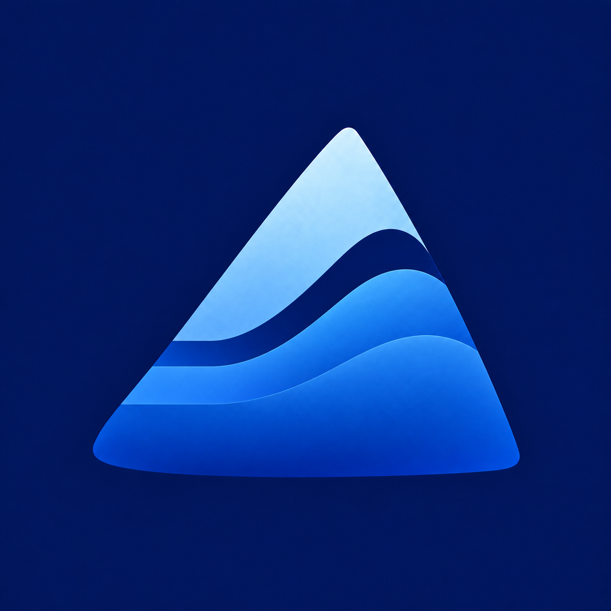
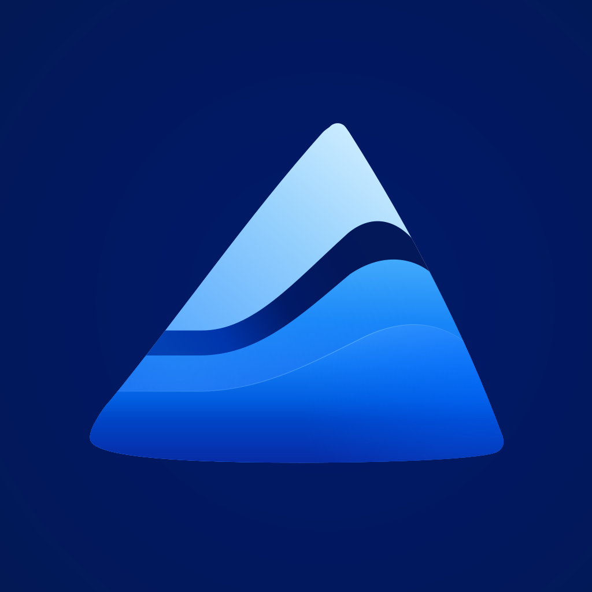

<!doctype html><html lang="zh-CN"><meta charset="utf-8"><meta name="viewport" content="width=device-width,initial-scale=1"><title>iCourse 正式图标 · SVG</title>
<style>*{box-sizing:border-box}body{margin:0;background:#eeece8;color:#15223b;font:14px -apple-system,BlinkMacSystemFont,"PingFang SC",sans-serif}main{max-width:980px;padding:38px;margin:auto}.eyebrow{font-size:11px;letter-spacing:3px;color:#6c7480}h1{font-size:26px;margin:12px 0 24px;font-weight:550}.compare{display:grid;grid-template-columns:1fr 1fr;gap:24px}.card{padding:26px;background:#faf9f6;border-radius:20px;text-align:center}.icon{width:min(100%,290px);border-radius:22%;display:block;margin:auto}.label{margin-top:18px;font-size:13px;color:#657186}.sizes{display:flex;align-items:flex-end;gap:22px;margin-top:24px;padding:24px 30px;background:#171f30;border-radius:20px;color:#c0c8d8}.sizes img{border-radius:22%;display:block}.small{text-align:center;font-size:10px}.small span{display:block;margin-top:9px}.sizes p{margin:0 0 7px auto;font-size:12px;color:#9cacc6}footer{margin-top:22px;display:flex;justify-content:space-between;color:#66718a;gap:12px;font-size:12px}a{color:inherit;text-underline-offset:4px}@media(max-width:650px){main{padding:26px 20px}.compare{gap:12px}.card{padding:14px}.label{font-size:11px}.sizes{padding:20px;gap:16px}.sizes p{display:none}footer{flex-wrap:wrap}}</style>
<main><div class="eyebrow">iCOURSE / APPROVED ICON</div><h1>秩序成为海浪</h1>
<div class="compare"><div class="card"><div class="label">选定原图</div></div><div class="card"><div class="label">SVG 矢量版</div></div></div>
<div class="sizes"><div class="small"><span>96 px</span></div><div class="small"><span>64 px</span></div><div class="small"><span>32 px</span></div><div class="small"><span>16 px</span></div><p>纯曲线与渐变 · 可无限缩放</p></div>
<footer><span>iCourse 的正式图标</span><span><a href="../../../local_web/static/branding/icourse-icon.svg" download="icourse-icon.svg">下载 SVG</a> · <a href="../../../local_web/static/branding/icourse-icon-1024.png" download>下载 1024 PNG</a></span></footer></main></html>
